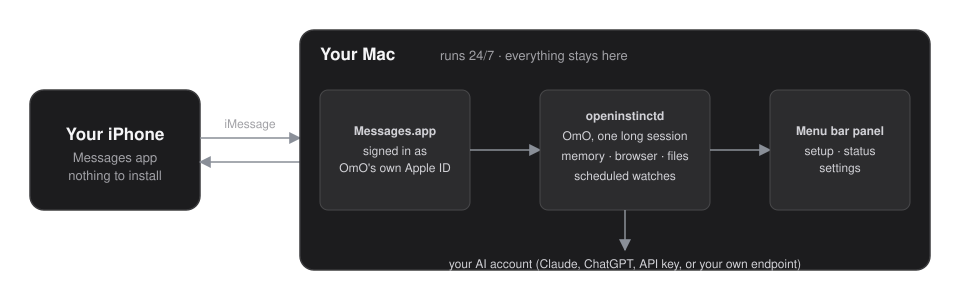
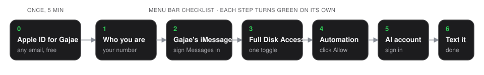
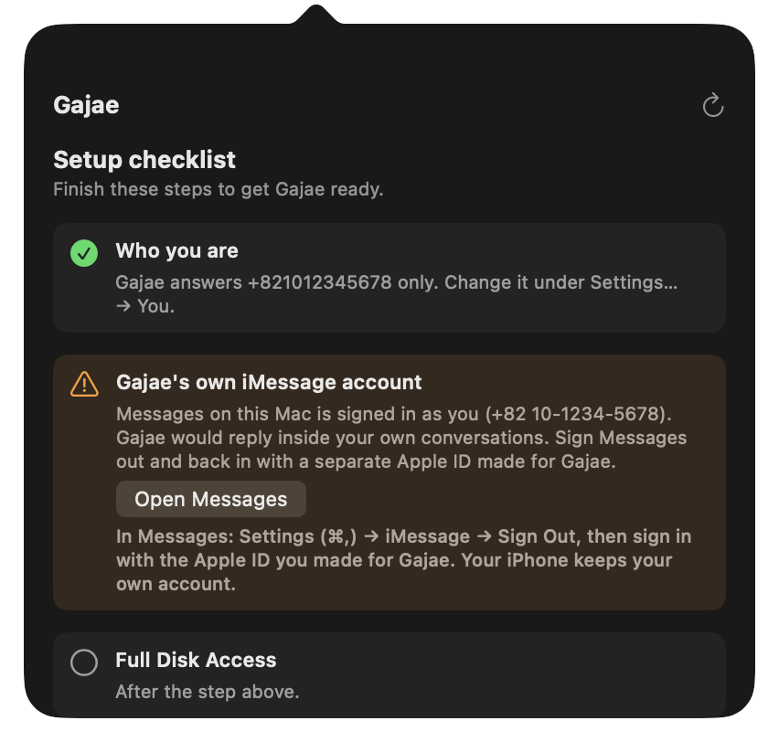
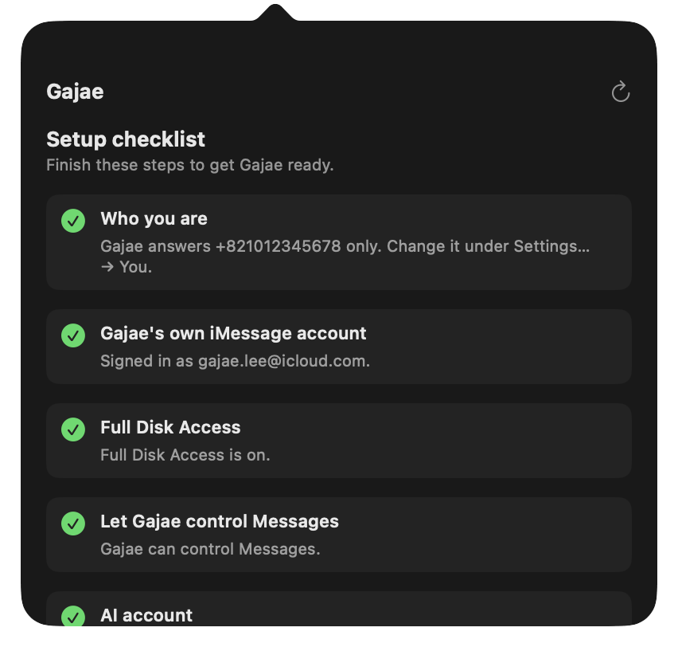
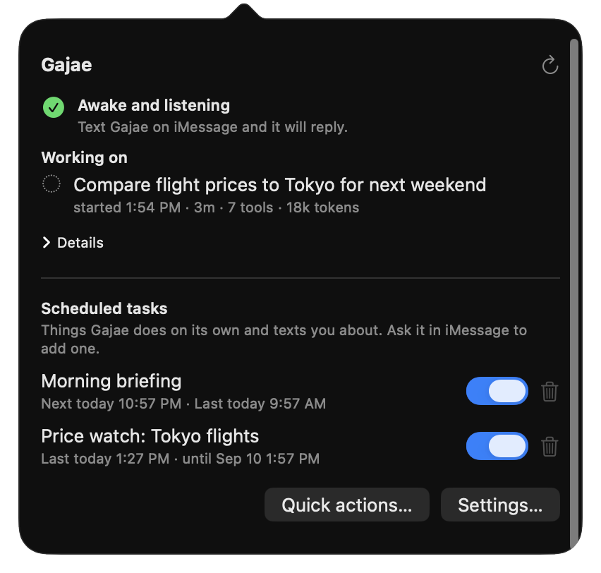

A personal AI agent that lives on your Mac and talks to you over iMessage.
Nothing to install on your phone. Nothing leaves your machine except the model call.
curl -fsSL https://raw.githubusercontent.com/Yeachan-Heo/openinstinct/main/scripts/install-remote.sh | sh
macOS on Apple Silicon. No certificate prompt, no Gatekeeper wall — why.
The phone side is the Messages app you already have — no bot to add, no app to install, works from the lock screen. The Mac side is where the agent, its memory, its browser sessions, and your credentials live.

The install command copies files and gets out of the way. Everything else is a checklist in the menu bar that watches its own state — each step turns green on its own as you finish it, and it refuses to run if something would go wrong.



One long-running conversation, steered by every new message. Rapid texts fold into the turn already running; long answers arrive as separate messages. Typing indicator and read receipts when you're away from the Mac.
Send a photo and it looks at it. When it takes a screenshot itself, you get the picture back.
A dedicated Chrome profile you sign into once. The browser tool is hard-pinned to it and can never open your personal Chrome or touch your cookies.
Anything slow — research, scraping, long browsing — runs as a child session. You get "on it", then the result, without the conversation blocking.
"Brief me at 9 every morning." "Tell me if this page changes." "Watch my DMs for 24 hours." Authored from chat, toggled from the menu bar. Failures get triaged by the agent instead of dumped on you.
Every turn lands in a git-backed memory repo — daily notes rolled up into people, projects, and decisions — recalled on demand instead of stuffed into a context window.

| Thing | Where it lives |
|---|---|
| Your messages | Read from the Messages database on your Mac. Never uploaded anywhere but the model call for the turn you sent. |
| Memory | A git repository in your home folder. Yours to read, grep, back up, or delete. |
| Browser sessions, passwords | On disk, owner-only permissions. Secrets you text it are stored per-service and never echoed back. |
| Model calls | To whichever AI account you sign into — Claude, ChatGPT, an API key, or your own endpoint. |
| Telemetry | None. There is no server; there is no account with us. |
System Integrity Protection stays on. The only permissions it asks for are Full Disk Access, to read incoming texts, and Automation, to send them. It answers exactly one phone number — yours — and drops everything else.
Building from source instead:
git clone https://github.com/Yeachan-Heo/openinstinct && cd openinstinct
bun install
bash scripts/install.shFull walkthrough in the user guide, internals in the architecture notes, operations in the runbook.
macOS only inspects files that carry a com.apple.quarantine tag, and that tag is
attached by the app that downloaded them — your browser. Anything fetched with
curl is untagged, so Gatekeeper never assesses it and you never see
"cannot be opened because the developer cannot be verified". This is the same reason Homebrew,
rustup, and bun install the way they do.
The command downloads one
.tar.gz,
checks it against a published checksum, and extracts it. Downloading that same archive in a
browser is equally fine: unpacking an archive and running a shell script is not a gated app
launch, so there is no approval screen either way and nothing needs notarizing.
Prefer to read before you run? The install script is short, and it refuses to continue on a checksum mismatch.
OpenInstinct shares a server with gajae-code. Setup stuck, a lane that will not attach, a watch you want it to run — ask there, or open a GitHub issue.
Group chats. Voice. Multiple owners. Remote access from outside your Mac. Turning off System Integrity Protection. If you need an agent that anyone can message, this is the wrong shape — it is built to serve exactly one person.